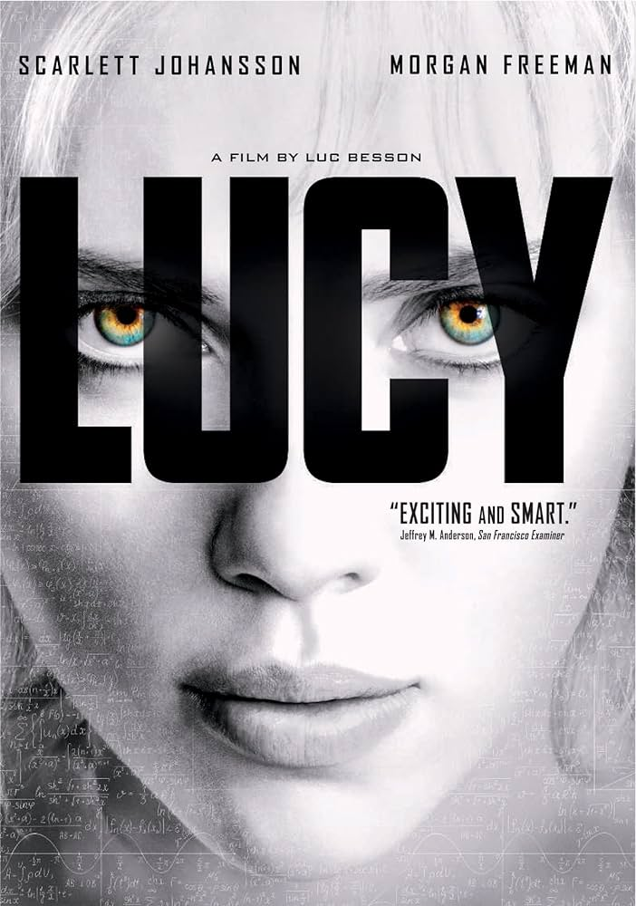
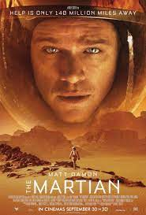
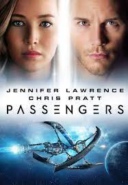

This is a Sci Fi about the use of the human brain

Really cool sci-fi movie about an astronaught stranded on Mmars and his fight to survive.

This takes place in the future, colonizing other
planets has become a business. One one particulr
voyage a passenger wakes. He decides to wake another
passenger to avoid lonliness
